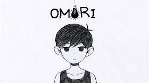

Index
Thanks for coming to read my game reveiws!

Doki Doki Literature Club is an indie horror visual novel disguised as a
dating simulator.
- 8/10 game overall
-
Good horror elements and great atmosphere but slow pacing and very much
so too anime
-
I recommend this for those that have a couple hours to waste but don't
want to actually need much gameplay.

A fun series, Five Nights at Freddy's is an indie horror classic.
- 9/10 game overall
-
Great lore, and awsome puzzles, but the main gameplay is often a bit
boring in the early nights.
-
I reccomend this for people that are looking for a longtime hobby, as
even using speedrunning strategies it takes well over 12 hours for
accomplished speedrunners to finish all the main games.

A standalone psychological horror about a boy facing forgotten traumas...
- 10/10 game overall
- Cute artstyle, not so great gameplay, and a chilling atmosphere.
-
I reccomend this for people that are looking for a middle time-span
hobby, as the game is around twenty ro thirty hours long.